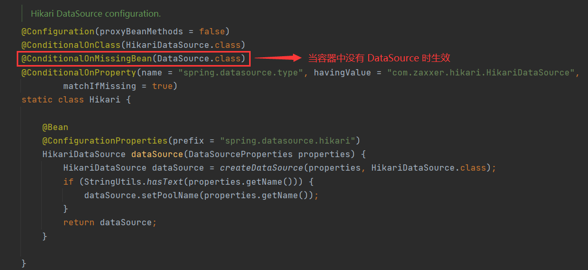

Spring Boot整合Druid数据源
HikariCP 是目前市面上性能最好的数据源产品，但在实际的开发过程中，企业往往更青睐于另一款数据源产品：Druid，它是目前国内使用范围最广的数据源产品。
Druid 是阿里巴巴推出的一款开源的高性能数据源产品，Druid 支持所有 JDBC 兼容的数据库，包括 Oracle、MySQL、SQL Server 和 H2 等等。Druid 不仅结合了 C3P0、DBCP 和 PROXOOL 等数据源产品的优点，同时还加入了强大的监控功能。通过 Druid 的监控功能，可以实时观察数据库连接池和 SQL 的运行情况，帮助用户及时排查出系统中存在的问题。
Druid 不是 Spring Boot 内部提供的技术，它属于第三方技术，我们可以通过以下两种方式进行整合：
- 自定义整合 Druid
- 通过 starter 整合 Druid
接下来我们将结合 Spring Boot 项目 spring-boot-adminex，分别对这两种整合方式进行讲解。
自定义整合 Druid
自定义整合 Druid 是指：根据 Druid 官方文档和自身的需求，通过手动创建 Druid 数据源的方式，将 Druid 整合到 Spring Boot 中。1. 引入 Druid 依赖
Druid 0.1.18 之后版本都已经发布到 Maven 中央仓库中了，所以我们只需要在项目的 pom.xml 中引入 Druid 的依赖（dependency ），即可将 Druid 导入到 Spring Boot 项目中。在 spring-boot-adminex 的 pom.xml 中添加以下代码，引入 JDBC 场景启动器、MySql 数据库驱动 和 Druid 依赖。
<!--导入 JDBC 场景启动器-->
<dependency>
<groupId>org.springframework.boot</groupId>
<artifactId>spring-boot-starter-data-jdbc</artifactId>
</dependency>
<!--导入数据库驱动-->
<dependency>
<groupId>mysql</groupId>
<artifactId>mysql-connector-java</artifactId>
<scope>runtime</scope>
</dependency>
<!--采用自定义方式整合 druid 数据源-->
<!--自定义整合需要编写一个与之相关的配置类-->
<dependency>
<groupId>com.alibaba</groupId>
<artifactId>druid</artifactId>
<version>1.2.6</version>
</dependency>
2. 创建数据源
我们知道，Spring Boot 使用 HikariCP 作为其默认数据源，但其中有一个十分重要的条件，如下图。

@ConditionalOnMissingBean(DataSource.class) 的含义是：当容器中没有 DataSource（数据源类）时，Spring Boot 才会使用 HikariCP 作为其默认数据源。 也就是说，若我们向容器中添加 Druid 数据源类（DruidDataSource，继承自 DataSource）的对象时，Spring Boot 就会使用 Druid 作为其数据源，而不再使用 HikariCP。
例如，在 net.biancheng.www.config 包中，创建一个名为 MyDataSourceConfig 的配置类，并将 Druid 数据源对象添加到容器中，代码如下。
package net.biancheng.www.config;
import com.alibaba.druid.pool.DruidDataSource;
import org.springframework.boot.context.properties.ConfigurationProperties;
import org.springframework.context.annotation.Bean;
import org.springframework.context.annotation.Configuration;
import org.springframework.web.servlet.config.annotation.WebMvcConfigurer;
import javax.sql.DataSource;
import java.sql.SQLException;
@Configuration
public class MyDataSourceConfig implements WebMvcConfigurer {
/**
* 当向容器中添加了 Druid 数据源
* 使用 @ConfigurationProperties 将配置文件中 spring.datasource 开头的配置与数据源中的属性进行绑定
* @return
*/
@ConfigurationProperties("spring.datasource")
@Bean
public DataSource dataSource() throws SQLException {
DruidDataSource druidDataSource = new DruidDataSource();
//我们一般不建议将数据源属性硬编码到代码中，而应该在配置文件中进行配置（@ConfigurationProperties 绑定）
// druidDataSource.setUrl("jdbc:mysql://127.0.0.1:3306/bianchengbang_jdbc");
// druidDataSource.setUsername("root");
// druidDataSource.setPassword("root");
// druidDataSource.setDriverClassName("com.mysql.cj.jdbc.Driver");
return druidDataSource;
}
}
在配置文件 application.yml 中添加以下数据源配置，它们会与与 Druid 数据源中的属性进行绑定，代码如下。
#数据源连接信息
spring:
datasource:
username: root
password: root
url: jdbc:mysql://127.0.0.1:3306/bianchengbang_jdbc
driver-class-name: com.mysql.cj.jdbc.Driver
注：配置类创建 Druid 数据源对象时，应该尽量避免将数据源信息（例如 url、username 和 password 等）硬编码到代码中，而应该通过 @ConfigurationProperties("spring.datasource") 注解，将 Druid 数据源对象的属性与配置文件中的以“spring.datasource”开头的配置进行绑定。
至此，我们就已经将数据源从 HikariCP 切换到了 Druid 了。
示例 1
接下来，我们可以使用 Spring Boot 提供的默认测试类 SpringBootAdminexApplicationTests 进行简单的测试，来验证数据源类型是否为 Druid 以及是否能正常获取数据库连接、访问数据库，代码如下。
package net.biancheng.www;
import org.junit.jupiter.api.Test;
import org.springframework.beans.factory.annotation.Autowired;
import org.springframework.boot.test.context.SpringBootTest;
import org.springframework.jdbc.core.JdbcTemplate;
import javax.sql.DataSource;
import java.sql.SQLException;
@SpringBootTest
class SpringBootAdminexApplicationTests {
//数据源组件
@Autowired
DataSource dataSource;
//用于访问数据库的组件
@Autowired
JdbcTemplate jdbcTemplate;
@Test
void contextLoads() throws SQLException {
System.out.println("默认数据源为：" + dataSource.getClass());
System.out.println("数据库连接实例：" + dataSource.getConnection());
//访问数据库
Integer i = jdbcTemplate.queryForObject("SELECT count(*) from `user`", Integer.class);
System.out.println("user 表中共有" + i + "条数据。");
}
}
运行测试程序，结果如下。
默认数据源为：class com.alibaba.druid.pool.DruidDataSource 数据库连接实例：com.alibaba.druid.proxy.jdbc.ConnectionProxyImpl@46e190ed user 表中共有2条数据。
根据以上运行结果可以看出，数据源已经成功地切换到了 Druid 数据源，且通过它也可以正常的获取数据库连接，访问数据库。
3. 开启 Druid 内置监控页面
Druid 内置提供了一个名为 StatViewServlet 的 Servlet，这个 Servlet 可以开启 Druid 的内置监控页面功能， 展示 Druid 的统计信息，它的主要用途如下：- 提供监控信息展示的 html 页面
- 提供监控信息的 JSON API
根据 Druid 官方文档-配置_StatViewServlet 配置，StatViewServlet 是一个标准的 javax.servlet.http.HttpServlet，想要开启 Druid 的内置监控页面，需要将该 Servlet 配置在 Web 应用中的 WEB-INF/web.xml 中，web.xml 中配置如下。注意：使用 StatViewServlet，建议使用 Druid 0.2.6 以上版本。
<servlet>
<servlet-name>DruidStatView</servlet-name>
<servlet-class>com.alibaba.druid.support.http.StatViewServlet</servlet-class>
</servlet>
<servlet-mapping>
<servlet-name>DruidStatView</servlet-name>
<url-pattern>/druid/*</url-pattern>
</servlet-mapping>
我们知道，Spring Boot 项目中是没有 WEB-INF/web.xml 的，因此我们可以在配置类中，通过 ServletRegistrationBean 将 StatViewServlet 注册到容器中，来开启 Druid 的内置监控页面。
关于 ServletRegistrationBean 的详细使用，请参考 Spring Boot注册Web原生组件（Servlet、Filter、Listener）。
示例 2
1. 在 MyDataSourceConfig 配置类中添加以下代码，将 StatViewServlet 注入到容器中，开启 Druid 内置监控页面功能。
/**
* 开启 Druid 数据源内置监控页面
*
* @return
*/
@Bean
public ServletRegistrationBean statViewServlet() {
StatViewServlet statViewServlet = new StatViewServlet();
//向容器中注入 StatViewServlet，并将其路径映射设置为 /druid/*
ServletRegistrationBean servletRegistrationBean = new ServletRegistrationBean(statViewServlet, "/druid/*");
//配置监控页面访问的账号和密码（选配）
servletRegistrationBean.addInitParameter("loginUsername", "admin");
servletRegistrationBean.addInitParameter("loginPassword", "123456");
return servletRegistrationBean;
}
2. 启动 Spring Boot，浏览器访问“http://localhost:8080/druid”，即可访问 Druid 的内置监控页面的登陆页，结果如下。
图2：Druid 内置监控页面的登陆页
3. 在登陆页输入框内，分别输入我们自定义的用户名（loginUsername）和密码（loginPassword），点击 Sign in 按钮访问监控页面，如下图。
图3：Druid 内置监控页面首页（猛击图片，查看原图）
4. 开启 SQL 监控
Druid 内置提供了一个 StatFilter，通过它可以开启 Druid 的 SQL 监控功能，对 SQL 进行监控。StatFilter 的别名是 stat，这个别名的映射配置信息保存在 druid-xxx.jar!/META-INF/druid-filter.properties 中。Druid 官方文档-配置_StatFilter 中给出了在 Spring 中配置该别名（stat）开启 Druid SQL 监控的方式，配置如下。
<bean id="dataSource" class="com.alibaba.druid.pool.DruidDataSource" init-method="init" destroy-method="close"> ... ... <property name="filters" value="stat" /> </bean>
根据以上配置我们可以看出，只要在 dataSource 的 Bean 中添加一个取值为“stat”的“filters”属性，就能开启 Druid SQL 监控，因此我们只要将该配置转换为在配置类中进行即可，代码如下。
@ConfigurationProperties("spring.datasource")
@Bean
public DataSource dataSource() throws SQLException {
DruidDataSource druidDataSource = new DruidDataSource();
//设置 filters 属性值为 stat，开启 SQL 监控
druidDataSource.setFilters("stat");
return druidDataSource;
}
示例 3
1. 为了验证 Druid SQL 监控是否开启，我们需要在 IndexController 中添加一个能够查询数据库的方法，代码如下。
@Controller
public class IndexController {
//自动装配 jdbcTemplate
@Autowired
JdbcTemplate jdbcTemplate;
/**
* 访问"/testSql",访问数据库
* @return
*/
@ResponseBody
@GetMapping("/testSql")
public String testSql() {
String SQL = "SELECT count(*) from `user`";
Integer integer = jdbcTemplate.queryForObject(SQL, Integer.class);
return integer.toString();
}
}
2. 重启 Spring Boot，浏览器访问“http://localhost:8080/testSql”，结果如下图。
图4：访问数据库
3. 访问 Druid 的内置监控页面，切换到 SQL 监控模块，可以看到 Druid SQL 监控已经开启，如下图。
图5：Druid SQL 监控（猛击图片，查看原图）
5. 开启防火墙
Druid 内置提供了一个 WallFilter，使用它可以开启防火墙功能，防御 SQL 注入攻击。WallFilter 的别名是 wall，这个别名映射配置信息保存在 druid-xxx.jar!/META-INF/druid-filter.properties 中。Druid 官方文档-配置 wallfilter 中给出了在 Spring 中使用该别名（wall）开启防火墙的方式，配置如下。
<bean id="dataSource" class="com.alibaba.druid.pool.DruidDataSource" init-method="init" destroy-method="close"> ... ... <property name="filters" value="wall" /> </bean>
WallFilter 可以结合其他 Filter 一起使用，例如：
<bean id="dataSource" class="com.alibaba.druid.pool.DruidDataSource" init-method="init" destroy-method="close">
...
<property name="filters" value="wall,stat"/>
</bean>
根据以上配置我们可以看出，只要在 dataSource 的 Bean 中添加一个取值为“wall”的“filters”属性，就能开启 Druid 的防火墙功能，因此我们只需要在配置类中为 dataSource 的 filters 属性再添加一个“wall”即可（多个属性值之间使用逗号“，”隔开），代码如下。
@ConfigurationProperties("spring.datasource")
@Bean
public DataSource dataSource() throws SQLException {
DruidDataSource druidDataSource = new DruidDataSource();
//同时开启 sql 监控(stat) 和防火墙(wall)，中间用逗号隔开。
//开启防火墙能够防御 SQL 注入攻击
druidDataSource.setFilters("stat,wall");
return druidDataSource;
}
示例 4
1. 重启 Spring Boot，浏览器访问“http://localhost:8080/testSql”，结果如下图。图6：访问数据库
2. 访问 Druid 的内置监控页面，切换到 SQL 防火墙，可以看到 Druid 防火墙已经开启，如下图。
图7：Druid 防火墙（猛击图片，原图查看）
6. 开启 Web-JDBC 关联监控
Druid 还内置提供了一个名为 WebStatFilter 的过滤器，它可以用来监控与采集 web-jdbc 关联监控的数据。根据 Druid 官方文档-配置_配置WebStatFilter，想要开启 Druid 的 Web-JDBC 关联监控，只需要将 WebStatFilter 配置在 Web 应用中的 WEB-INF/web.xml 中即可，web.xml 配置如下。
<filter>
<filter-name>DruidWebStatFilter</filter-name>
<filter-class>com.alibaba.druid.support.http.WebStatFilter</filter-class>
<init-param>
<param-name>exclusions</param-name>
<param-value>*.js,*.gif,*.jpg,*.png,*.css,*.ico,/druid/*</param-value>
</init-param>
</filter>
<filter-mapping>
<filter-name>DruidWebStatFilter</filter-name>
<url-pattern>/*</url-pattern>
</filter-mapping>
Spring Boot 项目中是没有 WEB-INF/web.xml 的，但是我们可以在配置类中，通过 FilterRegistrationBean 将 WebStatFilter 注入到容器中，来开启 Druid 的 Web-JDBC 关联监控。
配置类中示例代码如下。
/**
* 向容器中添加 WebStatFilter
* 开启内置监控中的 Web-jdbc 关联监控的数据
* @return
*/
@Bean
public FilterRegistrationBean druidWebStatFilter() {
WebStatFilter webStatFilter = new WebStatFilter();
FilterRegistrationBean filterRegistrationBean = new FilterRegistrationBean(webStatFilter);
// 监控所有的访问
filterRegistrationBean.setUrlPatterns(Arrays.asList("/*"));
// 监控访问不包括以下路径
filterRegistrationBean.addInitParameter("exclusions", "*.js,*.gif,*.jpg,*.png,*.css,*.ico,/druid/*");
return filterRegistrationBean;
}
示例 5
1. 重启 Spring Boot，浏览器访问“http://localhost:8080/testSql”，结果如下图。图8：访问数据库
2. 浏览器访问 AdminEx 系统的任意页面，然后再访问 Druid 的内置监控页面，切换到 Web 应用模块，可以看到 Druid 的 Web 监控已经开启，如下图。
图9：Druid Web 应用模块
与此同时，URI 监控和 Session 监控也都被开启，如下图。
图10：Druid URI 监控
通过 starter 整合 Druid
Druid 可以说是国内使用最广泛的数据源连接池产品，但到目前为止 Spring Boot 官方只对 Hikari、Tomcat、Dbcp2 和 OracleUcp 等 4 种数据源产品提供了自动配置支持，对于其他的数据源连接池产品（包括 Druid），则并没有提供自动配置支持。这就导致用户只能通过自定义的方式（第一种整合方式）整合 Druid，非常繁琐。为了解决这一问题，于是阿里官方提供了 Druid Spring Boot Starter，它可以帮助我们在 Spring Boot 项目中，轻松地整合 Druid 的数据库连接池和监控功能。
使用 Druid Spring Boot Starter 将 Druid 与 Spring Boot 整合，步骤如下。
1. 引入 Druid Spring Boot Starter 依赖
在 Spring Boot 项目的 pom.xml 中添加以下依赖，引入 Druid Spring Boot Starter（点击查询最新版本），示例代码如下。<!--添加 druid 的 starter--> <dependency> <groupId>com.alibaba</groupId> <artifactId>druid-spring-boot-starter</artifactId> <version>1.1.17</version> </dependency>
2. 配置属性
Druid Spring Boot Starter 已经将 Druid 数据源中的所有模块都进行默认配置，我们也可以通过 Spring Boot 配置文件（application.properties/yml）来修改 Druid 各个模块的配置，否则将使用默认配置。在 Spring Boot 配置文件中配置以下内容：
- JDBC 通用配置
- Druid 数据源连接池配置
- Druid 监控配置
- Druid 内置 Filter 配置
这些配置内容既可以在 application.properties 中进行配置，也可以在 application.yml 中尽心配置，当配置内容较多时，我们通常推荐使用 application.yml（示例中使用的是 application.yml）。
JDBC 通用配置
我们可以在 Spring Boot 的配置文件中对 JDBC 进行通用配置，例如，数据库用户名、数据库密码、数据库 URL 以及 数据库驱动等等，示例代码如下。
################################################## JDBC 通用配置 ##########################################
spring:
datasource:
username: root #数据库登陆用户名
password: root #数据库登陆密码
url: jdbc:mysql://127.0.0.1:3306/bianchengbang_jdbc #数据库url
driver-class-name: com.mysql.cj.jdbc.Driver #数据库驱动
Druid 数据源连接池配置
我们还可以在 Spring Boot 的配置文件中对 Druid 数据源连接池进行配置，示例代码如下。
################################################## Druid连接池的配置 ##########################################
spring:
datasource:
druid:
initial-size: 5 #初始化连接大小
min-idle: 5 #最小连接池数量
max-active: 20 #最大连接池数量
max-wait: 60000 #获取连接时最大等待时间，单位毫秒
time-between-eviction-runs-millis: 60000 #配置间隔多久才进行一次检测，检测需要关闭的空闲连接，单位是毫秒
min-evictable-idle-time-millis: 300000 #配置一个连接在池中最小生存的时间，单位是毫秒
validation-query: SELECT 1 FROM DUAL #测试连接
test-while-idle: true #申请连接的时候检测，建议配置为true，不影响性能，并且保证安全性
test-on-borrow: false #获取连接时执行检测，建议关闭，影响性能
test-on-return: false #归还连接时执行检测，建议关闭，影响性能
pool-prepared-statements: false #是否开启PSCache，PSCache对支持游标的数据库性能提升巨大，oracle建议开启，mysql下建议关闭
max-pool-prepared-statement-per-connection-size: 20 #开启poolPreparedStatements后生效
filters: stat,wall #配置扩展插件，常用的插件有=>stat:监控统计 wall:防御sql注入
connection-properties: 'druid.stat.mergeSql=true;druid.stat.slowSqlMillis=5000' #通过connectProperties属性来打开mergeSql功能;慢SQL记录
Druid 监控配置
我们还可以在 Spring Boot 的配置文件中对 Druid 内置监控页面、Web-JDBC 关联监控和 Spring 监控等功能进行配置，示例代码如下。
###################################################### Druid 监控配置信息 ##########################################
spring:
datasource:
druid:
# StatViewServlet配置，说明请参考Druid Wiki，配置_StatViewServlet配置
stat-view-servlet:
enabled: true #是否开启内置监控页面，默认值为 false
url-pattern: '/druid/*' #StatViewServlet 的映射路径，即内置监控页面的访问地址
reset-enable: true #是否启用重置按钮
login-username: admin #内置监控页面的登录页用户名 username
login-password: admin #内置监控页面的登录页密码 password
# WebStatFilter配置，说明请参考Druid Wiki，配置_配置WebStatFilter
web-stat-filter:
enabled: true #是否开启内置监控中的 Web-jdbc 关联监控的数据
url-pattern: '/*' #匹配路径
exclusions: '*.js,*.gif,*.jpg,*.png,*.css,*.ico,/druid/*' #排除路径
session-stat-enable: true #是否监控session
# Spring监控配置，说明请参考Druid Github Wiki，配置_Druid和Spring关联监控配置
aop-patterns: net.biancheng.www.* #Spring监控AOP切入点，如x.y.z.abc.*,配置多个英文逗号分隔
Druid 内置 Filter 配置
Druid Spring Boot Starter 对以下 Druid 内置 Filter，都提供了默认配置：- StatFilter
- WallFilter
- ConfigFilter
- EncodingConvertFilter
- Slf4jLogFilter
- Log4jFilter
- Log4j2Filter
- CommonsLogFilter
我们可以通过 spring.datasource.druid.filters=stat,wall ... 的方式来启用相应的内置 Filter，不过这些 Filter 使用的都是默认配置。如果默认配置不能满足我们的需求，我们还可以在配置文件使用 spring.datasource.druid.filter.* 对这些 Filter 进行配置，示例代码如下。
# ####################################################### Druid 监控配置信息 ##########################################
spring:
datasource:
druid:
# 对配置已开启的 filters 即 stat(sql 监控) wall（防火墙）
filter:
#配置StatFilter (SQL监控配置)
stat:
enabled: true #开启 SQL 监控
slow-sql-millis: 1000 #慢查询
log-slow-sql: true #记录慢查询 SQL
#配置WallFilter (防火墙配置)
wall:
enabled: true #开启防火墙
config:
update-allow: true #允许更新操作
drop-table-allow: false #禁止删表操作
insert-allow: true #允许插入操作
delete-allow: true #删除数据操作
在配置 Druid 内置 Filter 时，需要先将对应 Filter 的 enabled 设置为 true，否则内置 Filter 的配置不会生效。
以上所有内容都只是示例配置，Druid Spring Boot Starter 并不是只支持以上属性，它支持 DruidDataSource 内所有具有 setter 方法的属性。
至此，我们就完成了使用 Druid Spring Boot Starter 整合 Druid 的全部过程，至于验证步骤请参考自定义整合。
总结
无论是自定义整合还是通过 Druid Spring Boot Starter 整合，都能实现 Spring Boot 整合 Druid 数据源的目的，它们都各有利弊。- 根据官方文档，自定义整合 Druid 数据源能够更加清晰地了解 Druid 的各种功能及其实现方式，但整合过程繁琐。
- 通过 Druid Spring Boot Starter 整合 Druid 数据源，则更加方便快捷，大大简化了整合过程，但无法清晰地了解 Druid 的功能内部的实现方式和原理。
这里，我们更加推荐使用 Druid Spring Boot Starter 进行整合，毕竟这种整合方式大大简化了整个整合的过程。
关注公众号「站长严长生」，在手机上阅读所有教程，随时随地都能学习。内含一款搜索神器，免费下载全网书籍和视频。

微信扫码关注公众号